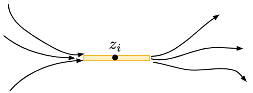
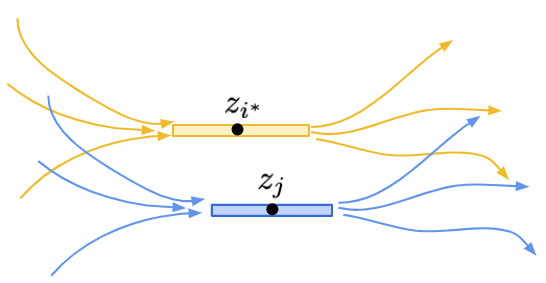

偏序集排序（八）
今天來證明定理 29，的前半部。
定理 29
基於貪婪鏈分解的合併排序法，其比較次數 \(T_{合併貪婪鏈} \le 6.33 \log e(P) + n\)。
首先我們來證明加強版的引理 26。
引理 30 [Cardinal, Fiorini, Joret, Jungers, Munro 2013]
對於任意偏序集 \(P\)，都有 \(4\log e(P) + nH(P) \ge n\log n\)。
引理 30 的證明
證明的方法依舊是數學歸納法（萬用科科），歸納的方向是：讓 \(n\) 從小到大、然後對於同樣集合大小的偏序集，根據 \(e(P)\) 值由小到大的順序進行歸納（也就是說依照偏序關係的多寡，由大至小歸納）。
Base Case: \(n=1\) 的時候不等式右邊是 \(0\)、而左邊非負，結論顯然成立。
Inductive Case: 令偏序集 \((P, <)\) 內的元素為 \(x_1, x_2, \ldots, x_n\)。我們假設 \(z=(z_1, z_2, \ldots, z_n)\) 是直鏈和多胞形 \(\mathcal{C}(P)\) 定義出來的最佳化問題的最佳解，也就是 \(nH(P) = -\sum_{i=1}^n \log z_i\)。 現在令 \(i^* = \arg\max_i\{z_i\}\) 是為數值最大的座標，如果有多個座標值相同我們可以隨意挑選一個。
證明的計畫如下：我們如果能找到另一個與 \(x_{i^*}\) 無關的元素 \(x_j\)，然後考慮 \(x_{i^*}\) 與 \(x_j\) 之間的大小關係。 根據新加入的大小關係，我們可以得到兩種可能的偏序集 \(P_1\) 與 \(P_2\)。此時根據線性延伸 \(e(P)\) 的定義，我們知道 \(e(P) = e(P_1) + e(P_2)\)。其中 \(\min\{e(P_1), e(P_2)\}\le \frac12 e(P)\)。 不妨假設 \(e(P_1)\) 是比較小的那個。那麼，如果能夠透過修改目前達到 \(nH(P)\) 的 \(z\) 得到另一個座落於 \(\mathcal{C}(P_1)\) 內部的座標 \(z'\)，來證明 \(\eqref{eq2}\)。就能夠利用數學歸納法，把下列兩式加起來，得到結論。
\[ \begin{eqnarray} 4\log e(P_1) &\le& 4\log e(P) - 4 \\ nH(P_1) & \le& nH(z') = nH(P) + 4 \label{eq2}\tag{*} \end{eqnarray} \]
加起來，利用歸納假設可以得到：\(4\log e(P) + nH(P) \ge 4\log e(P_1) + nH(P_1) \ge n\log n\)。
怎麼把 \(z\in \mathcal{C}(P)\) 修改成 \(z'\in\mathcal{C}(P_1)\) 又不會使熵值 \(nH(P_1)\) 變化太大呢？現在，對於一個 \(z_i\)，我們想像一下 \(z_i\) 是怎麼來的。由於 \(z\in \mathcal{C}(P)\)，因此所有通過 \(x_i\) 的鏈，其對應到的 \(z\) 值加總都不超過 \(1\)。於是，我們可以定義這個點 \(x_i\) 的「活動範圍」\([L_i, R_i]\)，其中 \(L_i = \max_{I(< x_i)} \sum_{k\in I-\{i\}} z_k\)，白話來說就是所有以 \(x_i\) 為結尾的鏈、不包含 \(x_i\) 本身之 \(z\) 值總和，的最大值。 而類似地上界可定義為 \(R_i=1 - \max_{I(> x_i)} \sum_{k \in I-\{i\}} z_k\)，也就是 \(x_i\) 後面能夠跟著的鏈的 \(z\) 值總和。

由於 \(z\) 是最佳化問題的最佳解，所以保證有 \(z_i = R_i - L_i\)（也就是說左邊的最長鏈與右邊的最長鏈，恰好留給了 \(x_i\) 寬度為 \(z_i\) 的空間）。若不然，我們可以讓 \(z_i\) 的值變大，定義成 \(R_i - L_i\)，這麼一來 \(nH(z)\) 的值會變得更小，與 \(z\) 是最佳解矛盾。
在這樣的結構之下，如果有兩個元素 \(x_i\) 與 \(x_j\) 其對應出來的區間重疊 \((L_i, R_i)\cap (L_j, R_j) = \emptyset\)，那麼我們便能保證 \(x_i\) 與 \(x_j\) 一定不可比較（incomparable）。
第一種情況
如果今天有個元素 \(x_*\) 無法與 \(x_{i^*}\) 進行比較，那麼此時必定存在一條通過 \(x_*\) 的鏈，其上頭元素對應到的 \(z\) 值總和恰好是 \(1\)。換句話說，此時必定存在另一個 \(z_j\)。使得它的活動範圍蓋住 \([L_{i^*}, R_{i^*}]\) 的中點，即 \((L_{i^*}+R_{i^*})/2 \in [L_j, R_j]\)，如下圖所示。

這種時候，考慮 \(P_1\) 與 \(P_2\)。無論是何種情形，我們總是可以修改 \(z_{i^*}\) 與 \(z_j\)，把它們變成原本的 \(1/4\)。這時候，不難說明新的 \(z'\in\mathcal{C}(P_1)\) 且 \(z'\in\mathcal{C}(P_2)\)，如下圖所示：

這邊的證明會用到兩個條件：其一，\(z_{i^*} \ge z_j\)、其二，\(x_j\) 的活動範圍涵蓋了 \(x_{i^*}\) 的活動範圍中間點。 此時，將 \(x_{i^*}\) 與 \(x_j\) 進行比較後，無論誰大誰小，都能夠透過新的偏序集（歸納假設），說明 \(4e(P) + nH(P) \ge n\log n\)。
第二種情況
現在假設 \(x_{i^*}\) 與所有其他元素都可以比較。 此時我們想要把它歸納到 \(n-1\) 個點的偏序集：把這個元素從偏序集拿掉就可以了！ 令 \(P'\) 是偏序集 \((P, <)\) 把 \(x_{i^*}\) 移除後（保持其他元素之間的可比較關係）得到的子偏序集。 對於最佳解 \(z=(z_1, \ldots, z_n)\)，我們把除了 \(z_{i^*}\) 以外的所有數值通通等比例放大 \(1/(1-z_{i^*})\) 倍！ 如此一來，得到的點 \(z'\) 保證有 \(z'\in\mathcal{C}(P')\)。
那麼，我們將得到
\[ \begin{aligned} (n-1)H(P') &\le (n-1)H(z') \\ &= - \sum_{i\in [n]-\{i^*\}} \log z'_i\\ &= - \sum_{i\in [n]-\{i^*\}} \log z_i + \sum_{i\in [n]-\{i^*\}} \log (1-z_{i^*})\\ &= nH(P) + \log z_{i^*} + (n-1)\log (1-z_{i^*}) \end{aligned} \]
加上 \(e(P)=e(P')\) 這個觀察後，可以得到
\[ \begin{aligned} 4\log e(P) + n H(P) &= 4\log e(P') + nH(P)\\ &\ge 4\log e(P') + nH(P') - \log \left(z_{i^*} (1-z_{i^*})^{n-1}\right)\\ &\ge (n-1)\log (n-1) - \log \left(z_{i^*} (1-z_{i^*})^{n-1}\right) \end{aligned} \]
而後面這一項，透過算幾不等式可以知道，對任意 \(t\in (0, 1)\)：
\[ t(1-t)^{n-1} \le \frac{1}{n-1}\left( \frac{n-1}{n} \right)^n \]
因此
\[ - \log \left(z_{i^*} (1-z_{i^*})^{n-1}\right) \ge -\log \frac{1}{n-1} - n\log \frac{n-1}{n} \]
從而
\[ \begin{aligned} 4\log e(P) + n H(P) &\ge (n-1)\log (n-1) - \log \left(z_{i^*} (1-z_{i^*})^{n-1}\right)\\ &\ge (n-1)\log (n-1) + \log (n-1) - n\log (n-1) + n\log n \\ &= n\log n \end{aligned} \]
得證。 \(\square\)
接下來是證明的第二步
引理 31
對於任意 \(\delta\in [0, 1]\)，都有 \(nH(P) + (1-\delta) T_{合併貪婪鏈} \le n\log \frac{n}{\delta}\)。
引理 31 的證明
對於每一個偏序集中的元素 \(x_i\)，我們定義對應的座標
\[z_i = \frac{\delta}{n}\left(\frac{n}{\vert C_{id(x_i)}\vert }\right)^{1-\delta}\]
我們想要說 \(z=(z_1, z_2, \ldots, z_n)\) 這個點座落在 \(\mathcal{C}(P)\) 裡面即可。 要怎麼檢驗呢？只要說明對任意的鏈 \(C=\{v_1, v_2, \ldots, v_{\vert C\vert }\}\)，都有 \(\sum_{j} z_{v_j} \le 1\) 即可。 透過引理 28，我們知道 \(|C_{id(v_j)}\vert \ge \vert C\vert -j+1\)。 於是呢，
\[ \begin{aligned} \sum_{j} z_{v_j} &= \sum_{j=1}^{\vert C\vert } \frac{\delta}{n^{\delta}} \left(\frac{1}{\vert C_{id(v_j)}\vert }\right)^{1-\delta} \\ &\le \frac{\delta}{n^{\delta}} \sum_{j=1}^{\vert C\vert } \left( \frac{1}{\vert C\vert -j+1}\right)^{1-\delta} \\ &\le \frac{\delta}{n^{\delta}} \int_{0}^{\vert C\vert } \frac{1}{x^{1-\delta}} {\mathrm{d}} x \\ &= \delta \left(\frac{\vert C\vert }{n}\right)^\delta \le 1 \end{aligned} \]
接著，我們只需要利用 \(nH(P) \le nH(z)\) 這個觀察，整理兩邊以後可以得到：
\[ \begin{aligned} nH(P) &\le nH(z) = -\sum_{i=1}^n \log z_i\\ & = -\sum_{i=1}^n \log \frac{\delta}{n} - (1-\delta)\sum_{i=1}^n \log \frac{n}{\vert C_{id(x_i)}\vert }\\ & = -\sum_{i=1}^n \log \frac{\delta}{n} - (1-\delta) T_{合併貪婪鏈} \\ & = n\log \frac{n}{\delta} - (1-\delta) T_{合併貪婪鏈} \end{aligned} \]
得證。 \(\square\)
明天我們來完成定理 29 的證明。
備註
在參考資料中，Cardinal 等人證明了引理 30 時，除了上述版本的證明方法以外，還證明了最扎實版本：\(2\log e(P) + nH(P) \ge n\log n\)，但是證明相對暴力了些；筆者比較喜歡本篇中的證明。 此外，引理 31 是筆者以 \(H(P)\) 的最長鏈角度重新寫過一遍的做法，在原作之中是直接引用同一批作者更早以前在最大獨立集上的結論。如果朋友們跳進去看原本那篇論文的話，可能在這部分會感受到混淆，還請多留意。
參考資料
Jean Cardinal, Samuel Fiorini, Gwenaël Joret, Raphaël M. Jungers, J. Ian Munro, Sorting under Partial Information (without the Ellipsoid Algorithm), Combinatorica 33, 655–697 (2013). https://doi.org/10.1007/s00493-013-2821-5, ArXiv.